Student review draft using genuine Blender 5.2.2/macOS manual geometry test captures and preserved source controls.
Know before you act.
Location places the centre. Dimensions gives actual size. Half-height above the ground places a box’s bottom at ground level. Scale multiplies size; Apply Scale resets its multipliers without resizing. Navigation changes inspection, not the object.
ALIGNMENT PENDING. Completion is not teacher-confirmed Evidence.
Session A · Lesson 1
Start the cottage from empty geometry
Make your own C1 scene. This review draft combines genuine manual geometry test captures and preserved Blender source controls.
TODAYOwn scene, ground, grounded walls, named save and reopen.
01
Prepare an own scene and known view
IN SHORTOwn scene contains Camera/Light but no Cube.
READ ALOUD
DOCUMENT: Your own C1_Cottage_v01.blend SELECT: Cube, then Camera/Light; Object Mode TOOLS / ROUTE: File > New > General; Outliner; View menus; Save As/Open
EXPLANATION FRAMESI selected ___ in ___ Mode. I expected ___. I saw ___. My change was ___ and my retest showed ___.
1 · Prepare your own scene
1. Protect any wanted work already open. Start Blender File > New > General only in a safe own session. Keep the shared film master closed. In Layout, find the 3D Viewport, Outliner and Properties before using commands.
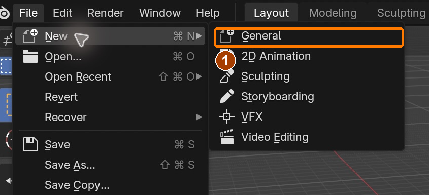
Historical source: File > New > General. Protect wanted work before opening a new own session.
2. Click Cube in the Outliner. Return the pointer to the 3D Viewport without clicking empty space. Press X and confirm Delete. Keep Camera and Light.
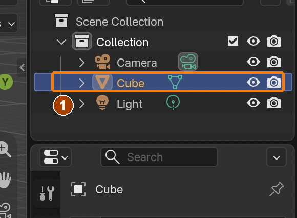
Historical source: select Cube before deleting it. Clicking empty space can deselect it.
3. File > Save As. Choose your approved private project folder and a fresh filename such as C1_Cottage_v01.blend. Cancel an overwrite warning. Save, then use File > Open to reopen that exact own file.
WHY: start from known geometry and protect the source. CHECK: Cube is absent; Camera and Light remain. FIX: Cube returned after reopen? Recheck selection, delete it, save your own file and reopen. A source screenshot is not proof that your own file saved.
Write down your exact filename and folder so you can find the same own project again.
STEP CHECKLIST
GLOSSARY
3D Viewport: Editor where you inspect and work in 3D space.
Outliner: Object list used to select the intended object.
Properties: Editor containing settings.
Layout: A workspace arranging the editors.
Object Mode: Whole-object operations.
WHYEach result becomes a recoverable checkpoint for the cottage.
CHECKOwn scene contains Camera/Light but no Cube.
FIXCheck object selection before deleting or framing.
WORKED EXAMPLE · DIFFERENT OBJECTDifferent object: a 1.6 m pedestal is centred 0.8 m above the ground. Use this reasoning for a new height.
STRETCH (AFTER THE CHECK PASSES)After the check, choose a second useful view and explain the different information it reveals.
02
Make the ground and learn the view controls
IN SHORTNamed 60 × 60 m plane remains at Z 0.
READ ALOUD
DOCUMENT: Your own C1_Cottage_v01.blend SELECT: Snow ground; Object Mode TOOLS / ROUTE: Add > Mesh > Plane; F2; S 30; N > Item; viewport gizmo/hand/magnifier
EXPLANATION FRAMESI selected ___ in ___ Mode. I expected ___. I saw ___. My change was ___ and my retest showed ___.
2 · Make the ground
4. Put the pointer over the 3D Viewport. Add > Mesh > Plane. Press F2, type Snow ground and confirm. Press S, type 30, then Enter. A default two-metre plane becomes 60 × 60 metres.
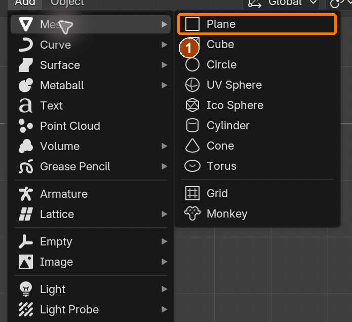
Preserved source control: Add > Mesh > Plane.
5. Check Snow ground is selected. With the pointer over the 3D Viewport, press N if its sidebar is closed, then click Item. Location must stay X 0, Y 0, Z 0. Dimensions should read X 60 m, Y 60 m, Z 0 m. Do not move the plane upward.
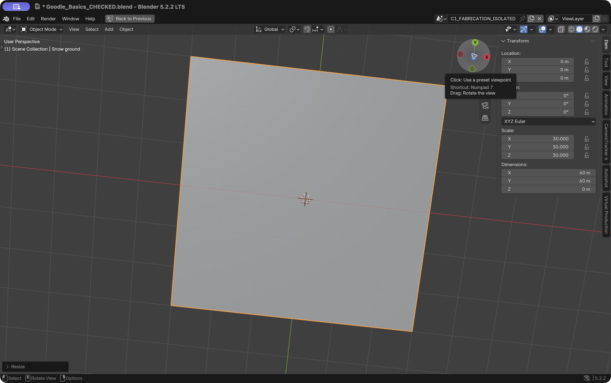
Manual test result after framing and orbit: Snow ground is a visible surface. Location is 0, 0, 0 and Dimensions are 60 × 60 × 0 m. Learn the view controls on the next page.
WHY: one shared ground level lets you test whether the walls float or sink. CHECK: name and values match. FIX: a menu opens in the wrong editor? Cancel, move the pointer into the 3D Viewport and repeat the one command.
2 · Look around without moving ground
Keep Snow ground selected. These controls change your view; they must not change the ground’s Location. The pictured controls sit at the upper-right of the 3D Viewport.
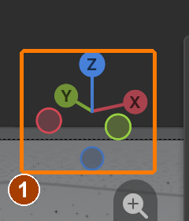
1 · Coloured axis gizmo
ORBIT: drag with the middle mouse button. Without one, drag the coloured axis gizmo. Turn until the ground surface is visible.
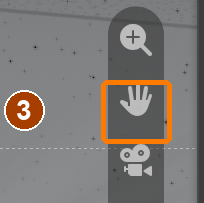
3 · Hand icon
PAN: hold Shift while dragging with the middle mouse button, or drag the hand icon below the axis gizmo. Slide the view sideways.
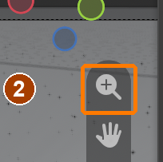
2 · Magnifier icon
ZOOM: scroll the mouse wheel, or drag the magnifier icon. Move the view nearer, then farther away. Check ground Location stays X 0, Y 0, Z 0.
Menu routes without a numpad: View > Viewpoint > Front, Right or Top. To recover a lost view, select the intended object in the Outliner, then View > Frame Selected. Esc cancels an accidental object move; Edit > Undo reverses a confirmed wrong action.
Genuine preserved Blender 5.2.2/macOS control captures. Icon numbering follows the original source.
STEP CHECKLIST
GLOSSARY
3D Viewport: Editor where you inspect and work in 3D space.
Outliner: Object list used to select the intended object.
Properties: Editor containing settings.
Layout: A workspace arranging the editors.
Object Mode: Whole-object operations.
WHYEach result becomes a recoverable checkpoint for the cottage.
CHECKNamed 60 × 60 m plane remains at Z 0.
FIXCancel wrong-editor command and return pointer to the Viewport.
WORKED EXAMPLE · DIFFERENT OBJECTDifferent object: a 1.6 m pedestal is centred 0.8 m above the ground. Use this reasoning for a new height.
STRETCH (AFTER THE CHECK PASSES)After the check, choose a second useful view and explain the different information it reveals.
03
Build, size and inspect the wall block
IN SHORTCottage 6 × 4.5 × 3 m at Z 1.5; Scale 1 / 1 / 1.
READ ALOUD
DOCUMENT: Your own C1_Cottage_v01.blend SELECT: Cottage; Object Mode TOOLS / ROUTE: Add > Mesh > Cube; N > Item; Object > Apply > Scale
EXPLANATION FRAMESI selected ___ in ___ Mode. I expected ___. I saw ___. My change was ___ and my retest showed ___.
3 · Add and size the cottage walls
6. Add > Mesh > Cube. Press F2, name it Cottage and confirm. If the sidebar is closed, press N; choose Item. Check that Cottage—not Snow ground—is selected.
7. Set Location X 0, Y 0, Z 1.5 m. Keep Rotation X 0°, Y 0°, Z 0°. Set Dimensions X 6 m, Y 4.5 m, Z 3 m. Commit each field with Enter.
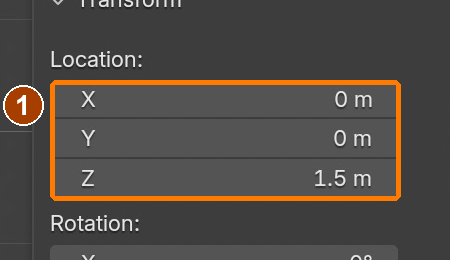
Historical action crop: Cottage Location. Its centre is Z 1.5 m.
Location places the centre. Dimensions gives actual size along the three axes. The walls are three metres high, so their centre sits at half that height: 1.5 m. Their bottom is at Z 0 and their top at Z 3.
CHECK: the wall block stands on the plane, centred at X 0 / Y 0. Orbit to see width, depth and height. FIX: the ground changed instead? Undo, select Cottage in the Outliner and re-enter only the affected values.
COMPARE: in Top view, the wall footprint is longer along X than Y. In Front or Right view, its base meets the ground at Z 0.
3 · Apply scale and inspect the walls
8. With Cottage selected, choose Object > Apply > Scale. Or press F3, type Apply Scale and choose Object > Apply > Scale. Check Scale becomes 1, 1, 1 while Dimensions stays 6, 4.5, 3 m. The visible building must not resize.
Scale multiplies an object’s size. Apply Scale keeps its current size while resetting those multipliers. This makes later distances, such as bevel widths, predictable.
Manual test result: Cottage stands on Snow ground. Scale is 1, 1, 1; Dimensions remain 6 × 4.5 × 3 m and Location Z remains 1.5 m. The isolated test scene began with scripted setup.
CHECK: the building remains 6 × 4.5 × 3 m with its base at Z 0. FIX: another object changed? Undo and select Cottage before repeating. Save your own C1 file when the shape and readouts agree.
STEP CHECKLIST
GLOSSARY
3D Viewport: Editor where you inspect and work in 3D space.
Outliner: Object list used to select the intended object.
Properties: Editor containing settings.
Layout: A workspace arranging the editors.
Object Mode: Whole-object operations.
WHYEach result becomes a recoverable checkpoint for the cottage.
CHECKCottage 6 × 4.5 × 3 m at Z 1.5; Scale 1 / 1 / 1.
FIXUndo wrong object change, select Cottage and re-enter affected value.
WORKED EXAMPLE · DIFFERENT OBJECTDifferent object: a 1.6 m pedestal is centred 0.8 m above the ground. Use this reasoning for a new height.
STRETCH (AFTER THE CHECK PASSES)After the check, choose a second useful view and explain the different information it reveals.
View the captured UI still sequence
These are genuine captured stills from the manual geometry test in Blender 5.2.2/macOS. This is not a screen recording. The test began in a script-seeded isolated scene; the ordinary student File New/Save As/Open route is untested.
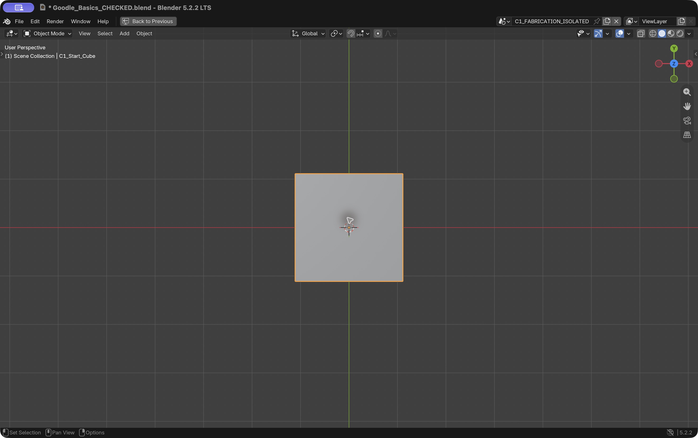
1. Before geometry work: selected cube in a script-seeded isolated test scene. This is not File > New proof.
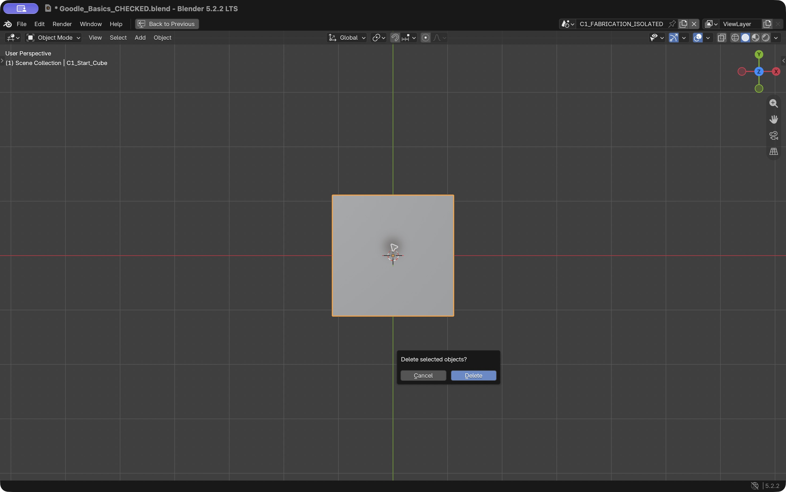
2. Action: X opens Delete confirmation for the selected seeded cube.
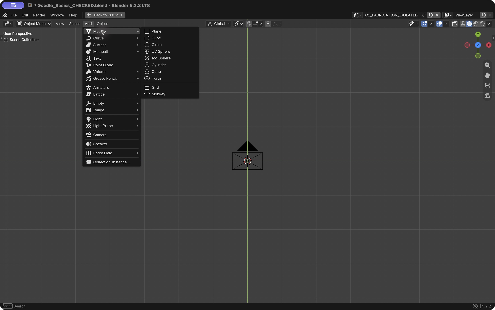
3. Action after deleting the cube: Add > Mesh > Plane in the isolated scene.
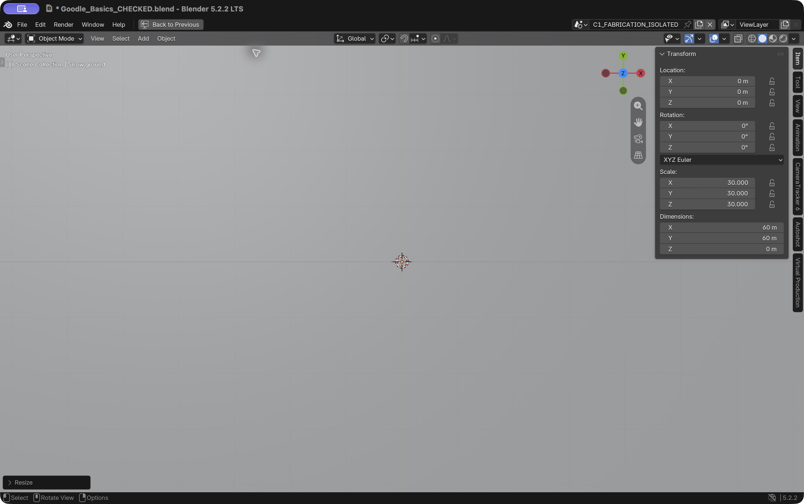
4. Ground result before framing: Snow ground Location 0, 0, 0; Scale 30; Dimensions 60 × 60 × 0 m.
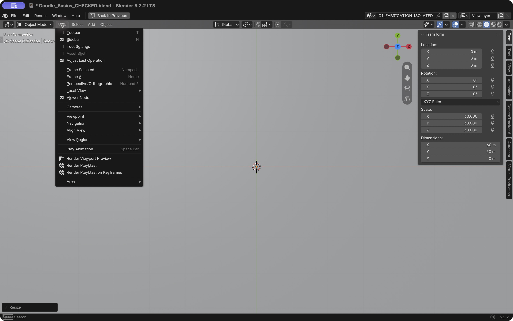
5. Action: View > Frame Selected is available for the selected Snow ground.6. Ground result after framing and orbit: the complete Snow ground surface is visible, with Dimensions 60 × 60 × 0 m.
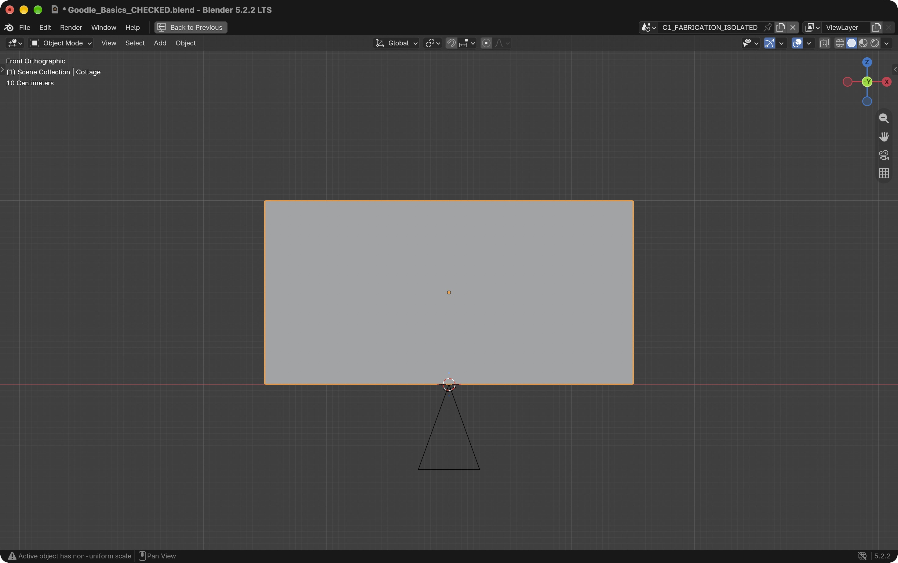
7. Sized-wall result before Apply Scale: Cottage base aligns with the ground-level axis in Front Orthographic view.
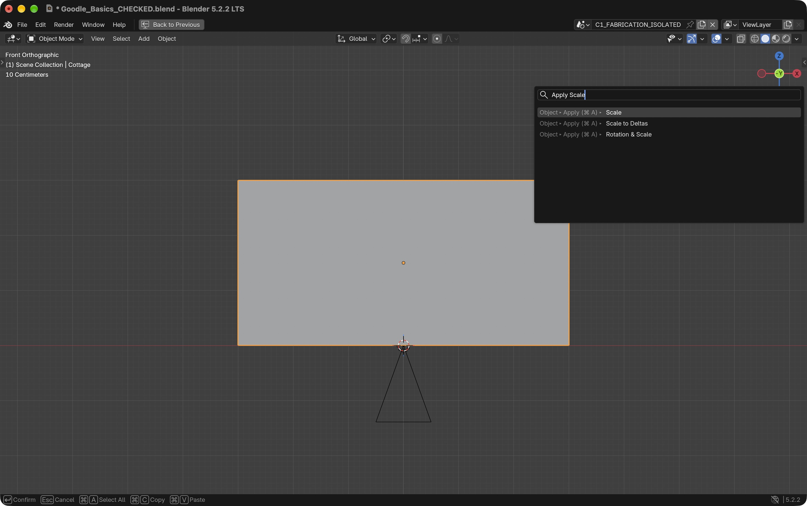
8. Action: F3 search for Apply Scale selects Object > Apply > Scale; the sized wall remains visible behind the menu.9. Result after Apply Scale: the whole Cottage wall stands on Snow ground. Location Z is 1.5 m; Dimensions are 6 × 4.5 × 3 m; Scale is 1, 1, 1.
04
Reopen and adapt in a separate practice copy
IN SHORTOriginal C1 preserved; independently grounded storage body in separate copy.
READ ALOUD
DOCUMENT: Your own C1_Cottage_v01.blend SELECT: Own C1 file, then separate practice copy TOOLS / ROUTE: View > Viewpoint/Frame Selected; File > Save/Open/Save As
EXPLANATION FRAMESI selected ___ in ___ Mode. I expected ___. I saw ___. My change was ___ and my retest showed ___.
4 · Inspect, save and reopen
9. Use View > Viewpoint > Front, Right and Top to inspect the block. A known view helps compare alignment. Use View > Frame Selected with Cottage selected, then orbit so its depth is visible. Navigation changes the view, not the object’s Location, Rotation or Scale.
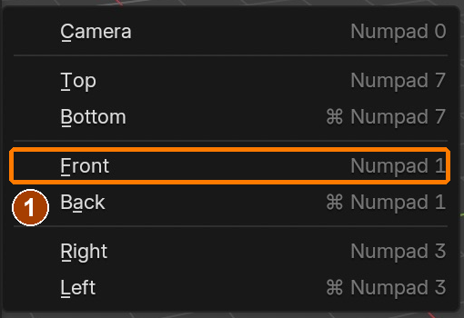
Historical source menu: Front. Menu routes are valid; a numpad is not required.
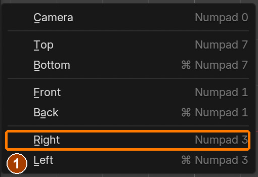
Historical source menu: Right. Check the wall base in a second view.
10. File > Save. File > Open: choose the exact C1_Cottage_v01.blend you saved. Verify Snow ground and Cottage remain named. Recheck dimensions, centre height and contact. Keep a private backup through your approved school storage.
CHECK: the reopened file contains the actual wall block you built. FIX: a different file opened? Inspect the filename and folder before editing. Do not overwrite a supplied source to repair an own-copy mistake.
Show the reopened project to your teacher. A filename or screenshot alone does not show that the saved contents reopened correctly.
Your changed-condition storage block
The director also needs a smaller storage building. Use File > Save As to keep a separate C1_Storage_Practice_v02.blend. Keep your original C1 cottage file for the roof lesson.
Add a separate cube named Storage body. Make it 3 × 2 × 2.2 m. Choose its centre height so its bottom meets the same ground. Choose X/Y placement with a clear gap from Cottage. Keep the existing cottage unchanged. You decide the position; do not copy a finished practice answer.
Different-case model: a 1.6 m display pedestal has its centre 0.8 m above the ground. Half the height places its bottom at ground level. Use that reasoning for your different storage height.
Save and reopen the practice copy. Compare intended result → observed mismatch → likely cause → one change → test. Be ready to adapt when the teacher changes the selected object or asks for another useful view.
Print and write, or use the matching guide’s local draft notes. My chosen centre height and why: __________________________ My X/Y placement and why: _________________________________ One mismatch, repair and retest: ______________________________
Return to your original C1_Cottage_v01.blend for the next roof checkpoint. A supplied recovery file, if later offered, is not personal construction.
Check your understanding
1. Orbit changes what you see. Which object values should stay unchanged, and why?
2. The three-metre wall is centred at Z 1.5. Where are its bottom and top? Explain.
3. After Apply Scale, which readout becomes 1, 1, 1 and which dimensions should stay the same?
4. Frame Selected fits Light when you meant Cottage. What should you check first?
5. Your smaller storage block floats above the ground. Which relationship should you check before changing anything?
Show Me Show the personally built wall block in two useful views. Reopen the own file. Explain Location versus Dimensions and one repair. Adapt your view after a changed selection.
Before leaving [ ] Own C1 and practice copies saved and reopened. [ ] Ground/Cottage names and wall contact checked. [ ] Original C1 preserved for the roof lesson. [ ] Private backup and next action recorded. Date and private collection destination remain teacher-confirmation pending. Local draft saving does not submit anything.
STEP CHECKLIST
GLOSSARY
3D Viewport: Editor where you inspect and work in 3D space.
Outliner: Object list used to select the intended object.
Properties: Editor containing settings.
Layout: A workspace arranging the editors.
Object Mode: Whole-object operations.
WHYEach result becomes a recoverable checkpoint for the cottage.
CHECKOriginal C1 preserved; independently grounded storage body in separate copy.
FIXCheck exact filename and half-height relationship before changing values.
WORKED EXAMPLE · DIFFERENT OBJECTDifferent object: a 1.6 m pedestal is centred 0.8 m above the ground. Use this reasoning for a new height.
STRETCH (AFTER THE CHECK PASSES)After the check, choose a second useful view and explain the different information it reveals.
Before you submit
Student QA.
Evidence conversation
Keep it short and specific.
SENTENCE FRAMESI selected ___ in ___ Mode. I expected ___. I saw ___. I changed ___ and tested ___.
Sources and authorship
Method references.
Photo credits
Figures marked Illustration are drawn, not screenshots. Step values are starting points authored for this project. Draft for teacher review; not yet classroom-piloted.
Keep a local practice draft.
Keep a downloaded backup on shared computers. This is local practice, not an account backup or a teacher submission. The school collection route is not yet verified.